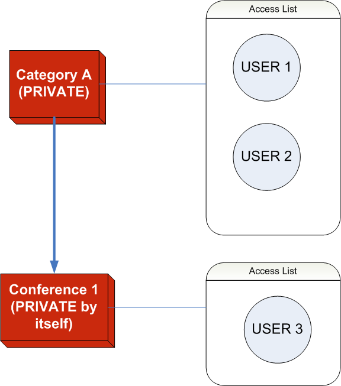
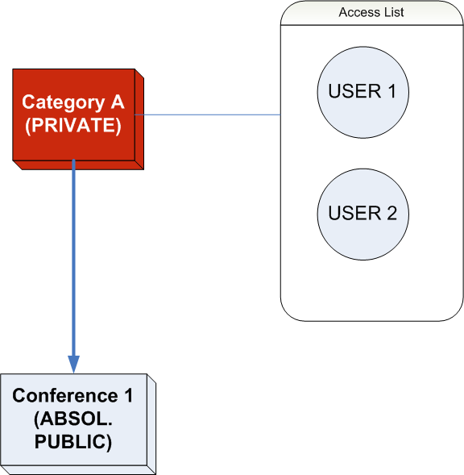

| Prev | Chapter 9. Protection System | Next |
By default, all the objects (category, event, session, contribution, material, file and link) in Indico are PUBLIC.
We can set an object as PRIVATE and this means that all the objects under it will be PRIVATE as well.
If an object is PRIVATE, nobody can access it but the managers, the users/groups in the access list named "Users allowed to access" and those who know the "access key" if set.
If an object is PRIVATE by inheritance:
Nobody can access it but the managers and the users/groups in the access list "Users allowed to access" of its father (as example, see section "Inheritance Schema").
We can set the PRIVATE object as PRIVATE by itself, which means that Indico checks only its protection policy and not the father's protection policy.

In the graphic, "User 1" and "User 2" can access "Category A" but they cannot access "Conference 1". Just "User 3" can access "Conference 1".We can set the PRIVATE object as ABSOLUTELY PUBLIC, which means that Indico skips the protection that was establish by inheritance.

In the graphic, just "User 1" and "User 2" can access "Category A" but everybodoy can access "Conference 1".